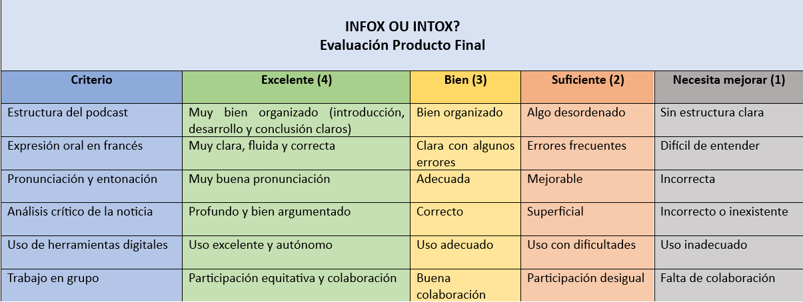

¿Cómo evaluamos el proyecto?
Instrumentos de evaluación en la SdA “Info ou intox ?”
En el marco del diseño de la situación de aprendizaje “Info ou intox ?”, centrada en el desarrollo de la competencia comunicativa en lengua francesa y la competencia digital crítica del alumnado de 4º de ESO, resulta fundamental planificar de manera adecuada los procesos de evaluación. La evaluación no se concibe únicamente como un mecanismo de calificación, sino como una herramienta clave para el aprendizaje, que permite recoger información relevante sobre el progreso del alumnado, ofrecer retroalimentación significativa y orientar la mejora tanto del alumnado como de la propia práctica docente.
En este sentido, se han seleccionado dos instrumentos de evaluación que permiten valorar tanto el proceso como el producto final del proyecto, teniendo en cuenta el uso responsable, crítico y reflexivo de las tecnologías digitales: una rúbrica que evaluará el producto final, es decir, el podcast, y un formulario de Google Forms donde se realizará la coevaluación. Estos instrumentos se integran de forma coherente en las distintas tareas de la situación de aprendizaje, favoreciendo la participación activa del alumnado en su propio proceso evaluativo mediante estrategias de coevaluación.
1. Rúbrica del podcast
Objetivo:
Evaluar el producto final del proyecto (podcast en francés), atendiendo tanto a aspectos lingüísticos como digitales y de pensamiento crítico.
Qué evalúa:
- Estructura del podcast (introducción, desarrollo y conclusión)
- Corrección y claridad en la expresión oral en francés
- Calidad del análisis crítico de la noticia (detección de fake news)
- Uso adecuado de herramientas digitales
- Trabajo cooperativo
Cuándo se utiliza:
Tras la grabación del podcast (Sesión 8 (y 9 si fuera necesaria)).
Cómo se utiliza:
El docente evalúa el producto final mediante una rúbrica con niveles de logro (Excelente, Bien, Suficiente, Necesita mejorar), acompañada de comentarios cualitativos para orientar la mejora.
Tratamiento de los datos:
Los resultados se recogerán para identificar fortalezas y dificultades comunes. Esto permitirá ajustar futuras actividades, reforzar contenidos específicos y mejorar la práctica docente. Además, se proporcionará retroalimentación individual y grupal.
Aquí tenemos un ejemplo de esta rúbrica de evaluación:

2. Cuestionario de coevaluación mediante Google Forms.
Objetivo:
Fomentar la reflexión del alumnado sobre su aprendizaje, su implicación en el trabajo en grupo y el uso de herramientas digitales.
Qué evalúa:
- Comprensión de la actividad y de los contenidos (fake news)
- Participación en el trabajo grupal
- Uso responsable y crítico de la tecnología
- Capacidad de mejora
Cuándo se utiliza:
Después de la presentación de los podcasts (Sesión 8).
Cómo se utiliza:
Se aplicará mediante un cuestionario en formato digital (Google Forms), con:
- Preguntas tipo escala (1–5)
- Preguntas abiertas de reflexión
Tratamiento de los datos:
Los resultados permitirán:
- Identificar dificultades individuales y grupales
- Ajustar futuras dinámicas de aula
- Mejorar la organización de tareas y agrupamientos
- Obtener feedback del alumnado sobre la actividad
El cuestionario tendrá un formato similar a este: Formulario Evaluación.
Además, estos instrumentos se utilizarán para complementar la evaluación del docente, aportando una visión más completa del proceso de aprendizaje.
En conclusión, la utilización de instrumentos de evaluación variados y complementarios, como la rúbrica del producto final y el formulario de coevaluación, permite obtener una visión más completa y realista del proceso de aprendizaje del alumnado. Estos instrumentos no solo facilitan la recogida de evidencias, sino que también promueven la reflexión, la autonomía y el desarrollo del pensamiento crítico.
Además, el análisis de los datos obtenidos a través de estos instrumentos resulta clave para la mejora continua de la práctica docente, permitiendo ajustar la intervención educativa en función de las necesidades detectadas. De este modo, la evaluación se convierte en un proceso dinámico y formativo, alineado con los principios de la educación competencial y con el uso responsable y significativo de las tecnologías digitales en el aula.